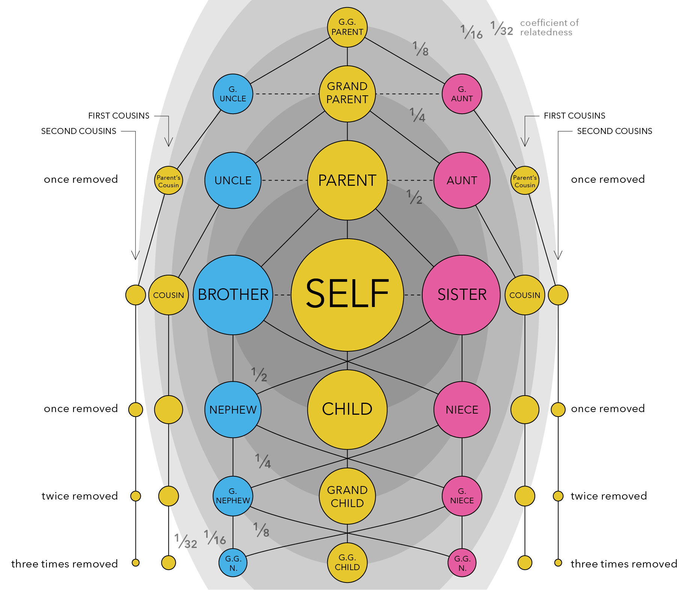
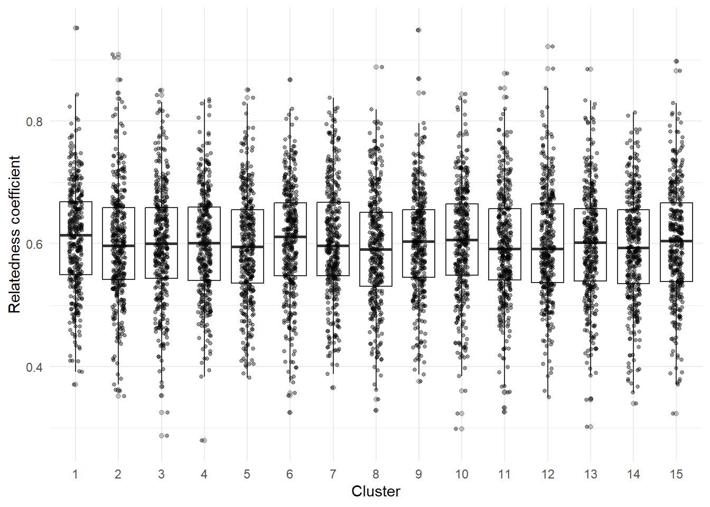

library("tidyverse")2. Population structure in Hawaiian pilot whales
Exploring genetic relatedness with R and the tidyverse
Background
Before this week’s lab, please spend some time looking at the figure below to familiarize yourselves with the concept of genetic relatedness, which is defined as the proportion of your DNA that you share with another individual. Closer relatives share more of their DNA, and more distant relatives share less and less of it.

When we average across a population, or across all living things, we find that all individuals share roughly half (50%) of their DNA with their immediate relatives - that is, their parents, offspring, and full siblings (see the darkest grey ellipse in the center of the figure above). All of these relationships are therefore considered to have a relatedness coefficient of 0.5.
If we expand out to the next grey ellipse in the figure, which represents our next closest family members, we see that all individuals share roughly 1/4 (25%) of their DNA with these extended family relatives - that is, half-siblings, grandparents and grandchildren, and aunts/uncles or nephews/nieces. All of these relationships are therefore considered to have a relatedness coefficient of 0.25.
We can expand out again to the third largest grey ellipse in the figure, and we see that all individuals share roughly 1/8 (12.5%) of their DNA with these distant family relatives - that is, great-grandparents and great-grandchildren, great aunts and uncles, and great nieces and nephews. All of these relationships are therefore considered to have a relatedness coefficient of 0.125.
Scientists can use this information to build pedigrees and determine family relationships in wild populations using a combination of genetic data, age data, and sex data. For example, if you know that two individual California sea lions - one is a 17yo female and the other is a 5yo female - have a relatedness coefficient of 0.54, meaning that just over half of their DNA is identical, you may be able to determine that these two individuals are either parent-offspring or full siblings. Given the age difference between the two, there’s a good chance that the older female is the mom and the younger female is the daughter.
What do you think is the relationship of the following individuals?
| Individual 1 | Individual 2 | Relatedness Coefficient |
| 20yo male | 10yo female | 0.23 |
| 13yo female | 10yo female | 0.56 |
| 38yo male | 4yo male | 0.26 |
Step 0: Set up environment
Organize your project directory structure
Here is a simple example to start off:
.
└── my_awesome_project
├── code
│ └── my_code.Rmd
├── data
│ ├── some_data.csv
│ └── more_data.csv
└── output
└── figsOpen a new
.rmdfile in yourcodefolderTitle & date your code file!
Load libraries
Step 1: Import data
Now that you have your environment set up, the first thing you will want to do is import the data that you are working with. The most common way this is done is by reading in a comma-separated file (csv) or tab-delimited file (e.g. tsv or txt files). We are using a csv file for this exercise, so you can read in your data using read_csv() from the readr package:
related <- read_csv("../data/SFPW_relatedness_associations.csv")
haplotypes <- read_csv("../data/SFPW_mtDNA_haplotypes.csv")Once you have imported your data, take a look at it to make sure it makes sense. You can do this in two ways: first, in the environment window (upper right corner), find the variable called “search_data” and click on the blue arrow. This will show a drop-down summary of your data. You’ll see each column listed as a vector, and it will show you the name of the column, the type or class of data, and the number of observations in each column.
You can also look at your data in the viewer. Click on the name of the data frame in the environment to open it up in the viewer window. Notice that it opens as a separate tab, and that each vector is shown as a column, with a row for each observation. In this case, we have three columns: one for month/year, one for the garden search term, and one for the ice skating search term. There are a total of 256 observations for each of those columns.
Step 2: Wrangle your data
Usually, the data that you import won’t be exactly what you want to plot or model. Sometimes it will require some tidying - for example, you may have incomplete observations (rows) that you need to remove, or inconsistent data entry that needs to be cleaned up. In this case, the first column imported a column of row numbers that are not useful for us. We can use a pipe operator %>% , which has a Ctrl+Alt+p default hotkey assigned in Tools/Keyboard Shortcuts Help followed by the command dplyr::select to select all columns except column 1 (-1) . This drops column 1 from our dataframe.
related <- related %>%
dplyr::select(-1)
haplotypes <- haplotypes %>%
dplyr::select(-1)Take some time to familiarize yourself with the data. Explore the columns, what information is present, and what questions you can ask of the data.
Functions like head , summary, and str are helpful for dataframe familiarization.
head(related)| clust1 | ind1 | island1 | clust2 | ind2 | island2 | rel | assoc |
|---|---|---|---|---|---|---|---|
| 1 | 1 | Hawaii | 1 | 1 | Hawaii | 0.6140150 | 0.7552239 |
| 1 | 1 | Hawaii | 1 | 10 | Hawaii | 0.5008173 | 0.6746087 |
| 1 | 1 | Hawaii | 1 | 11 | Hawaii | 0.7420147 | 0.9352217 |
| 1 | 1 | Hawaii | 1 | 12 | Hawaii | 0.7454757 | 0.8846820 |
| 1 | 1 | Hawaii | 1 | 13 | Hawaii | 0.7263974 | 1.0000000 |
| 1 | 1 | Hawaii | 1 | 14 | Hawaii | 0.6744903 | 0.8362351 |
summary(related) clust1 ind1 island1 clust2 ind2
Min. : 1 Min. : 1.00 Length:90000 Min. : 1 Min. : 1.00
1st Qu.: 4 1st Qu.: 5.75 Class :character 1st Qu.: 4 1st Qu.: 5.75
Median : 8 Median :10.50 Mode :character Median : 8 Median :10.50
Mean : 8 Mean :10.50 Mean : 8 Mean :10.50
3rd Qu.:12 3rd Qu.:15.25 3rd Qu.:12 3rd Qu.:15.25
Max. :15 Max. :20.00 Max. :15 Max. :20.00
island2 rel assoc
Length:90000 Min. :0.0000 Min. :0.0000
Class :character 1st Qu.:0.1010 1st Qu.:0.1010
Mode :character Median :0.1589 Median :0.2082
Mean :0.2004 Mean :0.2447
3rd Qu.:0.2684 3rd Qu.:0.3434
Max. :0.9510 Max. :1.0000 str(related)tibble [90,000 × 8] (S3: tbl_df/tbl/data.frame)
$ clust1 : num [1:90000] 1 1 1 1 1 1 1 1 1 1 ...
$ ind1 : num [1:90000] 1 1 1 1 1 1 1 1 1 1 ...
$ island1: chr [1:90000] "Hawaii" "Hawaii" "Hawaii" "Hawaii" ...
$ clust2 : num [1:90000] 1 1 1 1 1 1 1 1 1 1 ...
$ ind2 : num [1:90000] 1 10 11 12 13 14 15 16 17 18 ...
$ island2: chr [1:90000] "Hawaii" "Hawaii" "Hawaii" "Hawaii" ...
$ rel : num [1:90000] 0.614 0.501 0.742 0.745 0.726 ...
$ assoc : num [1:90000] 0.755 0.675 0.935 0.885 1 ...head(haplotypes)| indID | cluster | individual | island | haps |
|---|---|---|---|---|
| 1_1_Hawaii | 1 | 1 | Hawaii | A |
| 5_1_Hawaii | 5 | 1 | Hawaii | A |
| 6_1_Hawaii | 6 | 1 | Hawaii | D |
| 8_1_Hawaii | 8 | 1 | Hawaii | A |
| 12_1_Hawaii | 12 | 1 | Hawaii | D |
| 1_2_Hawaii | 1 | 2 | Hawaii | A |
summary(haplotypes) indID cluster individual island
Length:300 Min. : 1 Min. : 1.00 Length:300
Class :character 1st Qu.: 4 1st Qu.: 5.75 Class :character
Mode :character Median : 8 Median :10.50 Mode :character
Mean : 8 Mean :10.50
3rd Qu.:12 3rd Qu.:15.25
Max. :15 Max. :20.00
haps
Length:300
Class :character
Mode :character
str(haplotypes)tibble [300 × 5] (S3: tbl_df/tbl/data.frame)
$ indID : chr [1:300] "1_1_Hawaii" "5_1_Hawaii" "6_1_Hawaii" "8_1_Hawaii" ...
$ cluster : num [1:300] 1 5 6 8 12 1 5 6 8 12 ...
$ individual: num [1:300] 1 1 1 1 1 2 2 2 2 2 ...
$ island : chr [1:300] "Hawaii" "Hawaii" "Hawaii" "Hawaii" ...
$ haps : chr [1:300] "A" "A" "D" "A" ...After exploring the data, we can see the individual pilot whales are described by cluster, island, and haplotype. Now we’re ready to ask questions about the data.. Like: “What is the spread of relatedness coefficients within clusters? Are some clusters more closely related than others?” These questions can be specifically rephrased as hypothesis.
- Write your hypotheses
- Null hypothesis (H0):
- All pilot whale clusters are equally related.
- There is no difference in relatedness among Hawaiian short-finned pilot whale clusters.
- Alternative hypothesis (H1a):
- Some pilot whale clusters are more incestuous than others.
- There is significant difference in relatedness in Hawaiian short-finned pilot whale clusters.
- Null hypothesis (H0):
Begin with the end in mind: now that we have an idea of the end, we can wrangle our data further!
Keep within cluster comparisons:
within_cluster <- related %>%
filter(clust1 == clust2)Remove rows where the coefficient shows relatedness to self
within_cluster <- within_cluster %>%
filter(!ind1 == ind2)Step 3: Visualize data
ggplot(within_cluster,
aes(x = factor(clust1),
y = rel)) +
geom_boxplot(outlier.alpha = 0.3) +
geom_jitter(width = 0.15, alpha = 0.4, size = 1) +
labs(
x = "Cluster",
y = "Relatedness coefficient"
) +
theme_minimal()
Are any of these clusters more or less spread out on the y axis of relatedness than others? It’s kind of hard to tell… But maybe cluster 4 and 5 are less spread than, say, cluster 15. We can do a quick statistical test on this with Levene’s test for initial exploration.
Step 4: Model data
car::leveneTest(rel ~ clust1, data= within_cluster)Make clust1 a factor
within_cluster <- within_cluster %>%
mutate(clust1 = factor(clust1))Try to model with leveneTest again
car::leveneTest(rel ~ clust1, data= within_cluster)| Df | F value | Pr(>F) | |
|---|---|---|---|
| group | 14 | 0.4487499 | 0.9587698 |
| 5685 | NA | NA |
Here we see that Levene’s test for variance is not significant, indicating that variances of relatedness clusters are similar. Aka.. each cluster is similarly “incestuous”, or “inbred”. What does it say that each cluster has an average relatedness coefficient of 0.6?